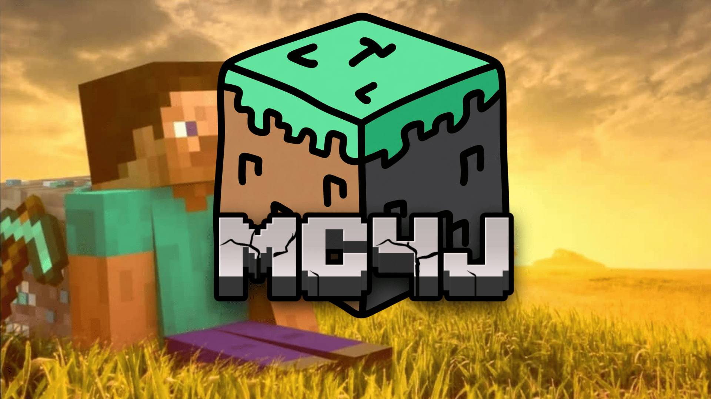

A dedicated launcher designed to manage, organize and run Minecraft Legacy Console Edition installations. Built to provide a more flexible and convenient experience for the Minecraft Legacy community.
More than a launcher. A management environment for Minecraft Legacy Console Edition.
MC4JLauncher is an independent software project developed as part of the Project MC4J ecosystem. Its purpose is to simplify the management and execution of Minecraft Legacy Console Edition installations through a centralized interface.
Instead of manually managing different installations and related files, users can use MC4JLauncher to organize their game environments and access additional management tools.
The launcher is designed with extensibility in mind, allowing additional functionality through its extension system.
Tools designed to make managing Minecraft Legacy installations more convenient.
Organize and manage multiple Minecraft Legacy installations from a centralized interface.
Manage the game's storage environment and associated installation files.
Extend launcher functionality through additional Python-based extensions.
Handle the runtime environment used to launch Minecraft Legacy installations.
Monitor game processes and detect important game session events.
Access utilities designed to help manage temporary and unnecessary launcher files.
MC4JLauncher is one of the projects developed under the Project MC4J ecosystem. Together with tools like MC4JEditor, it contributes to an independent environment focused on Minecraft Legacy Console Edition.
Interested in MC4JLauncher? Explore its source code, follow development and contribute through GitHub.
Visit GitHub Repository